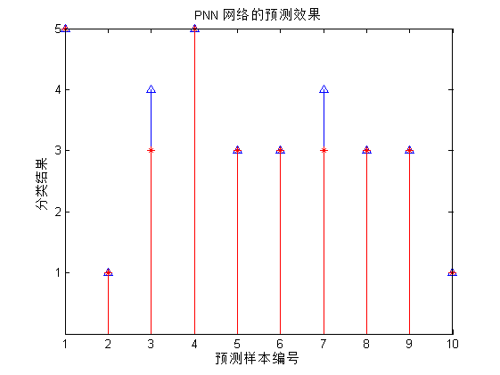

案例19: 概率神经网络的分类预测--基于PNN的变压器故障诊断
| 该案例作者申明： |
| 1：本人长期驻扎在此板块里，对该案例提问，做到有问必答。本套书籍官方网站为：video.ourmatlab.com |
| 2：点此从当当预定本书：《Matlab神经网络30个案例分析》。 |
3：此案例有配套的教学视频，视频下载方式video.ourmatlab.com/vbuy.html。 |
| 4：此案例为原创案例，转载请注明出处（《Matlab神经网络30个案例分析》）。 |
| 5：若此案例碰巧与您的研究有关联，我们欢迎您提意见，要求等，我们考虑后可以加在案例里。 |
Contents
清空环境变量
clc; clear all close all nntwarn off; warning off;
数据载入
load data
选取训练数据和测试数据
Train=data(1:23,:); Test=data(24:end,:); p_train=Train(:,1:3)'; t_train=Train(:,4)'; p_test=Test(:,1:3)'; t_test=Test(:,4)';
将期望类别转换为向量
t_train=ind2vec(t_train); t_train_temp=Train(:,4)';
使用newpnn函数建立PNN SPREAD选取为1.5
Spread=1.5; net=newpnn(p_train,t_train,Spread)
net =
Neural Network object:
architecture:
numInputs: 1
numLayers: 2
biasConnect: [1; 0]
inputConnect: [1; 0]
layerConnect: [0 0; 1 0]
outputConnect: [0 1]
numOutputs: 1 (read-only)
numInputDelays: 0 (read-only)
numLayerDelays: 0 (read-only)
subobject structures:
inputs: {1x1 cell} of inputs
layers: {2x1 cell} of layers
outputs: {1x2 cell} containing 1 output
biases: {2x1 cell} containing 1 bias
inputWeights: {2x1 cell} containing 1 input weight
layerWeights: {2x2 cell} containing 1 layer weight
functions:
adaptFcn: (none)
divideFcn: (none)
gradientFcn: (none)
initFcn: (none)
performFcn: (none)
plotFcns: {}
trainFcn: (none)
parameters:
adaptParam: (none)
divideParam: (none)
gradientParam: (none)
initParam: (none)
performParam: (none)
trainParam: (none)
weight and bias values:
IW: {2x1 cell} containing 1 input weight matrix
LW: {2x2 cell} containing 1 layer weight matrix
b: {2x1 cell} containing 1 bias vector
other:
name: ''
userdata: (user information)
训练数据回代 查看网络的分类效果
% Sim函数进行网络预测 Y=sim(net,p_train); % 将网络输出向量转换为指针 Yc=vec2ind(Y);
通过作图 观察网络对训练数据分类效果
figure(1) subplot(1,2,1) stem(1:length(Yc),Yc,'bo') hold on stem(1:length(Yc),t_train_temp,'r*') title('PNN 网络训练后的效果') xlabel('样本编号') ylabel('分类结果') set(gca,'Ytick',[1:5]) subplot(1,2,2) H=Yc-t_train_temp; stem(H) title('PNN 网络训练后的误差图') xlabel('样本编号')

网络预测未知数据效果
Y2=sim(net,p_test); Y2c=vec2ind(Y2); figure(2) stem(1:length(Y2c),Y2c,'b^') hold on stem(1:length(Y2c),t_test,'r*') title('PNN 网络的预测效果') xlabel('预测样本编号') ylabel('分类结果') set(gca,'Ytick',[1:5]) web browser http://www.matlabsky.com/thread-11164-1-1.html
相关论坛： 《Matlab神经网络30个案例分析》官方网站：video.ourmatlab.com Matlab技术论坛：www.matlabsky.com Matlab函数百科：www.mfun.la Matlab中文论坛：www.ilovematlab.com |